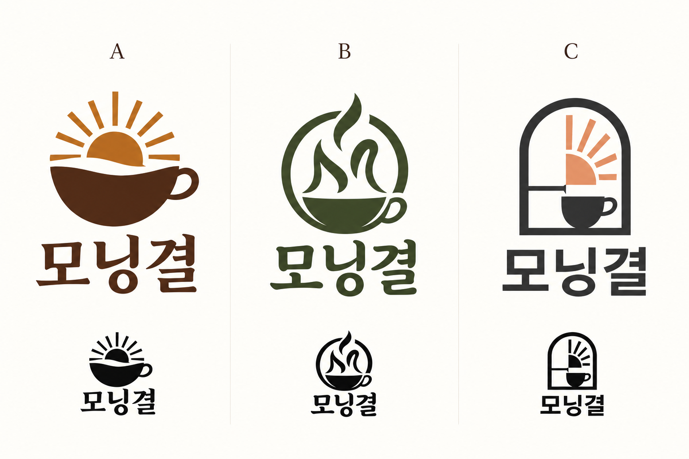
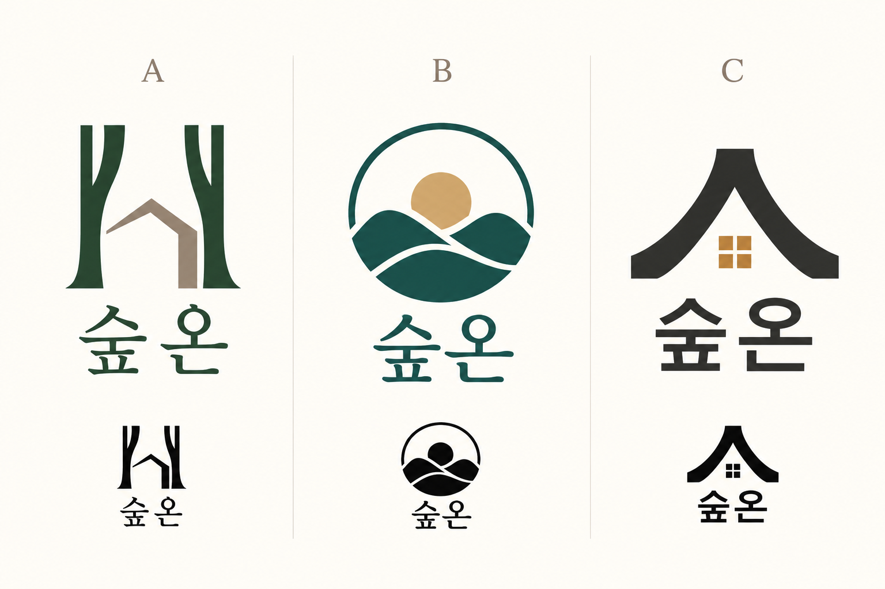
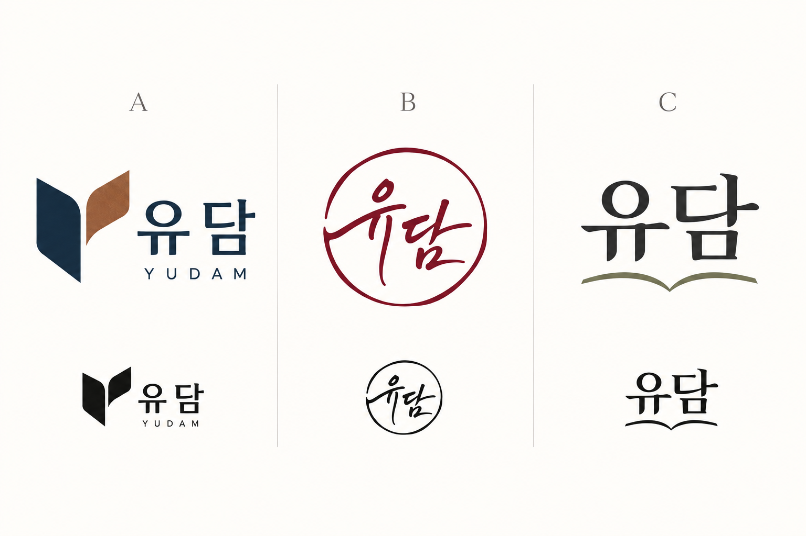
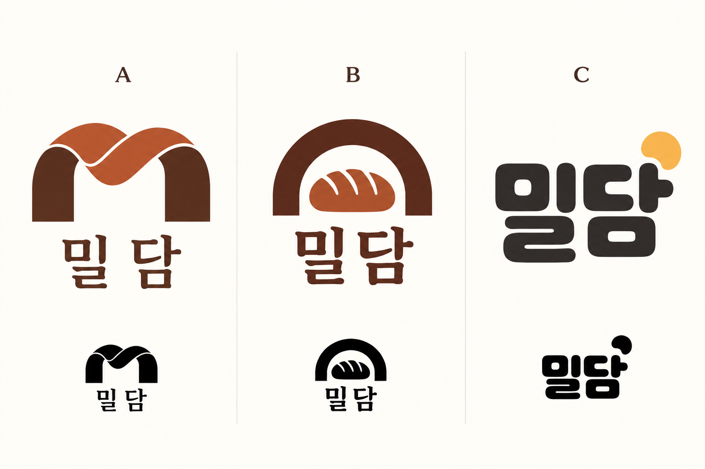
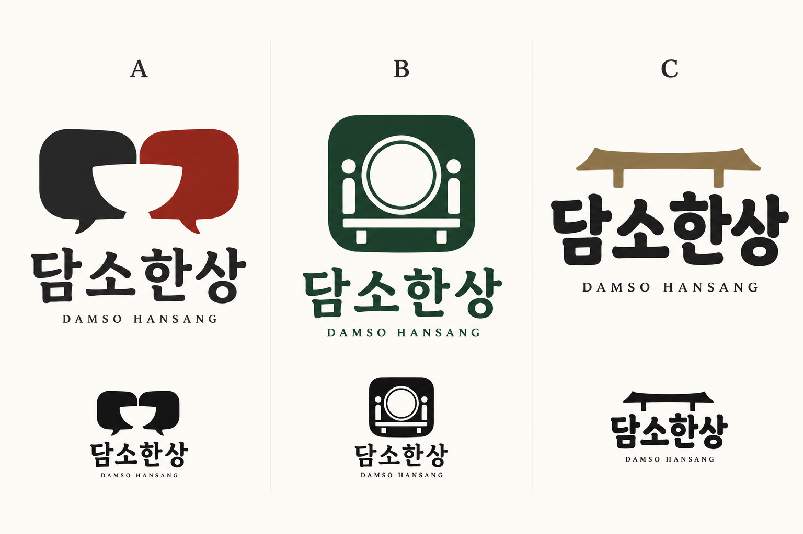
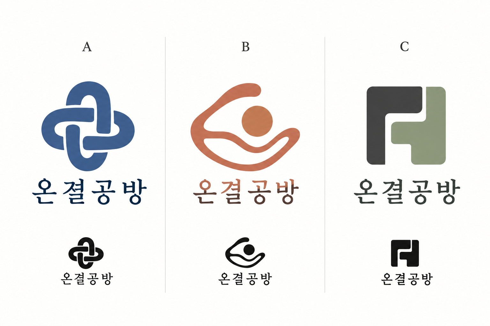

아침을 담은 잔
떠오르는 해와 커피 잔을 연결해 하루를 시작하는 공간을 표현합니다.
갈색은 커피의 깊이, 황금빛은 아침의 온기를 나타냅니다.
활용 · 테이크아웃 컵, 돌출 간판, 원형 스티커
이 방향으로 문의 →카페의 온기, 숙소의 고요함, 나만의 이야기.
브랜드가 전하고 싶은 마음을 로고에 담습니다.

업종마다 세 가지 방향을 준비했습니다. 형태와 색의 의미, 어울리는 사용처를 읽고 마음에 가까운 방향을 골라 보세요.
가상 상호를 사용한 AI 활용 디자인 견본입니다. 전시된 이미지 전체가 납품 파일은 아니며, 실제 제작 시 상호와 세부 형태를 확인하여 정리합니다.
떠오르는 해와 커피 잔을 연결해 하루를 시작하는 공간을 표현합니다.
갈색은 커피의 깊이, 황금빛은 아침의 온기를 나타냅니다.
활용 · 테이크아웃 컵, 돌출 간판, 원형 스티커
이 방향으로 문의 →원형과 부드러운 글자, 김을 떠올리는 선으로 편안하게 머무는 분위기를 제안합니다.
짙은 초록 한 색으로 차분하고 오래 보아도 편한 인상을 줍니다.
활용 · 간판, 적립 카드, 컵 도장
이 방향으로 문의 →열린 아치와 해의 조각은 햇빛이 드는 창을 뜻합니다. 단정한 글자로 도시적인 분위기를 더합니다.
차콜과 복숭아색의 대비로 선명함과 부드러움을 함께 줍니다.
활용 · 유리창 시트, 온라인 프로필, 작은 매장 간판
이 방향으로 문의 →
두 나무 사이의 지붕은 자연에 둘러싸인 작은 쉼터를 표현합니다.
짙은 초록과 돌빛으로 숲과 건축의 안정감을 나타냅니다.
활용 · 입구 석재 표지, 키 봉투, 숙소 안내장
이 방향으로 문의 →둥근 해와 산의 곡선은 느리게 쉬는 여행의 시간을 제안합니다.
깊은 청록은 고요한 자연, 은은한 금빛은 따뜻한 햇살을 나타냅니다.
활용 · 숙소 도장, 수건 라벨, 예약 안내 이미지
이 방향으로 문의 →지붕을 닮은 구조와 작은 창은 사적인 공간의 아늑함을 표현합니다.
검정과 황토빛으로 절제된 건축과 따뜻한 실내를 나타냅니다.
활용 · 금속 사인, 객실 안내, 건축적인 숙소 브랜드
이 방향으로 문의 →
접힌 종이와 Y의 형태는 기록에서 새로운 이야기가 펼쳐지는 과정을 뜻합니다.
남색은 차분한 신뢰, 구릿빛은 사람의 온기를 제안합니다.
활용 · 명함, 노트 표지, 작가 프로필
이 방향으로 문의 →둥근 인장 안의 이름은 자신의 목소리와 서명을 간결하게 남기는 방향입니다.
버건디 한 색으로 깊이 있고 개인적인 인상을 줍니다.
활용 · 책갈피, 서명 스탬프, 작품 라벨
이 방향으로 문의 →읽기 쉬운 이름과 작은 책의 선으로 내용이 중심이 되는 개인 브랜드를 제안합니다.
차콜과 올리브는 절제된 편집 디자인의 분위기입니다.
활용 · 뉴스레터, 블로그 머리글, 강의 자료 표지
이 방향으로 문의 →
접힌 반죽의 곡선과 m을 닮은 구조로 빵이 만들어지는 손길을 표현합니다.
테라코타와 코코아색은 구운 빵의 따뜻한 색을 떠올리게 합니다.
활용 · 빵 봉투, 포장 스티커, 매장 사인
이 방향으로 문의 →단순한 오븐과 칼집 있는 빵은 굽는 과정을 직관적으로 보여줍니다.
짙은 갈색과 구운 빵빛을 사용하고, 단색 인쇄용 구성도 함께 제안합니다.
활용 · 포장 도장, 종이 봉투, 식빵 띠지
이 방향으로 문의 →둥근 글자와 작은 점은 반죽의 부풀음과 친근한 인사를 표현합니다.
꿀빛 노랑과 차콜로 밝고 편안한 동네 빵집을 제안합니다.
활용 · 어린 고객이 많은 빵집, 스티커, 온라인 메뉴
이 방향으로 문의 →
서로 마주한 말풍선 사이의 그릇은 이야기하며 식사하는 시간을 표현합니다.
차콜과 벽돌색은 단단한 인상에 따뜻한 식사의 온기를 더합니다.
활용 · 간판, 메뉴 표지, 포장 띠지
이 방향으로 문의 →접시와 자리를 간결한 인장으로 묶어 정돈된 식사의 인상을 제안합니다.
짙은 초록은 차분하고 안정적인 한식당 분위기입니다.
활용 · 한식당 메뉴, 앞치마 자수, 원형 도장
이 방향으로 문의 →굵고 부드러운 상호와 식탁을 떠올리는 짧은 선으로 가독성을 우선합니다.
먹색과 은은한 금빛으로 친근함에 단정함을 더합니다.
활용 · 멀리서 읽는 간판, 배달 포장, 작은 프로필
이 방향으로 문의 →
맞물린 띠의 구조는 재료와 손길, 사람 사이의 연결을 표현합니다.
차분한 파랑과 남색으로 정돈된 제작 공간을 제안합니다.
활용 · 제작 라벨, 명함, 공방 안내판
이 방향으로 문의 →연속된 선과 가운데 원은 손으로 재료를 다듬는 과정과 완성의 즐거움을 뜻합니다.
테라코타는 흙과 손작업의 온기를 나타냅니다.
활용 · 도자기 공방, 체험 안내, 종이 태그
이 방향으로 문의 →엇갈린 기하학적 조각은 맞춤과 조립, 재료의 구조를 표현합니다.
차콜과 세이지색으로 단정하고 현대적인 제작 공간을 제안합니다.
활용 · 목공방, 복합 공방, 각인과 포장 라벨
이 방향으로 문의 →상호와 원하는 분위기를 확인한 뒤
두 가지 시안을 제안합니다.
새로운 방향의 재제작, 추가 시안, 인쇄물 편집, 벡터 원본은 별도 협의합니다. 견본은 취향을 고르는 자료이며, 18안 전체를 제공하는 상품은 아닙니다.
업종과 마음에 드는 시안을 고릅니다. 새로운 방향도 상담할 수 있습니다.
상호, 업종, 원하는 분위기와 사용할 곳을 알려 주세요.
제공 파일과 수정 범위, 금액을 확인하고 진행합니다.
선택한 안을 정리하고 최종 이미지와 사용 안내를 전달합니다.
아직 고르지 않아도 괜찮습니다. 원하는 분위기를 알려 주세요.
상호 · 업종 · 마음에 드는 시안 · 사용처 · 희망 일정을 남겨 주세요.
크몽 프로필에서 문의해 주시면 제작 가능 범위와 견적을 안내합니다.
이 페이지에는 결제 기능이 없습니다. 로고 서비스는 상담 후 진행 방법을 안내하며, 크몽의 별도 로고 상품 등록·승인 완료를 의미하지 않습니다.
네. 마음에 드는 방향을 알려 주시면 실제 상호와 사용 목적에 맞는 구성을 상담합니다. 글자 수나 형태에 따라 배치가 달라질 수 있습니다.
간판 제작에 필요한 벡터 도면은 기본 제공 범위에 포함되지 않습니다. 상표 출원 전에는 별도의 유사 상표 조사가 필요하며 등록 가능성이나 독점권을 보장하지 않습니다.
AI를 활용해 방향을 탐색한 콘셉트 견본입니다. 실제 납품 전 글자와 형태, 작은 크기와 단색 표현을 점검합니다. 사용 목적에 따라 필요한 정리 작업과 권리 조건을 사전에 협의합니다.